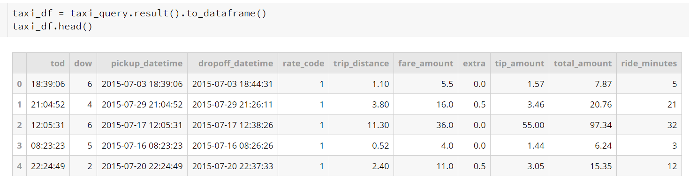

Graphs
Firefly Map:

We have been approached to study the feasibility of deploying self-driving cars to compete with yellow taxis in NYC. The thought is that self-driving cars will be more profitable since there will be no need to pay a driver or tip the driver. We will study NYC yellow taxi traffic patterns; specifically, we will look at the drop-off and pick up locations in order to predict where to deploy the self-driving cars.
Questions: What are the most profitable zones to deploy our vehicles and at what time of day?
What drop-off and pick-up locations/zones have the most taxi traffic?
Hypothesis: If Monday-Friday has high zone locations over the course of 10 years then we can predict when and where to send our cars so that it is most profitable.
Data was sourced from Google’s public BigQuery data set for New York Taxi. The original data set from 2015 was over 146 million entries. Source data was reduced to slightly over 11.5 million from July 2015 only and then explored and cleaned. Considerations for cleaning included rides paid by credit card for standard, JFK, and Newark fares only. These were cleaned for longitude/latitudes within the region, rides between one-half mile and 250 miles, rides between 2 and 180 minutes in length, and fares between $1 and $250. This dropped the data set down to 6.75 million rides with limited outliers and no null points. Data could be manipulated in a multitude of additional ways to continue to shrink the data set as needed.
Explations:
Explations:
What we couldn't do goes here
What we found goes here
TLC Yellow Taxi dataset from Google BigQuery
GitHub: https://github.com/claridyd/NYC_taxi_analysis